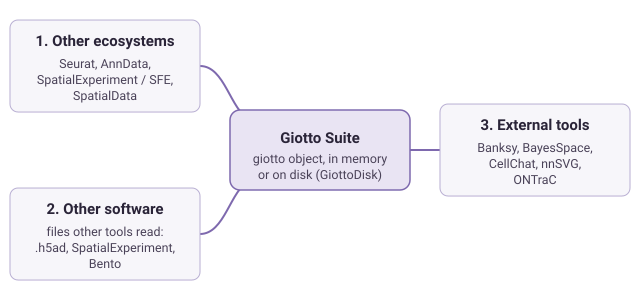

The Giotto Suite is a set of packages around one object, the
giotto object: GiottoClass defines it, Giotto analyses it,
GiottoVisuals plots it, GiottoDisk keeps it on disk and GiottoLens
explores it interactively. GiottoConnect is where the Suite meets
everything outside it. It has three roles.

1. Other ecosystems
Objects built in Seurat, scanpy/squidpy or Bioconductor convert to Giotto, and back:
| Ecosystem | To Giotto | From Giotto |
|---|---|---|
| Seurat | seuratToGiotto() |
giottoToSeurat() |
AnnData (.h5ad) |
anndataToGiotto() |
giottoToAnnData() |
| SpatialExperiment / SpatialFeatureExperiment | spatialExperimentToGiotto() |
giottoToSpatialExperiment() |
| SpatialData | spatialdataToGiotto() |
g <- seuratToGiotto(seurat_object)
g <- anndataToGiotto("sample.h5ad", source = "project_dir") # GiottoDisk-backed
spe <- giottoToSpatialExperiment(g)Seurat, AnnData and SpatialExperiment conversions run on one mapping engine. A mapping file describes where each part of an object (counts, metadata, coordinates, polygons, reductions, networks, images) lives in the other ecosystem. The engine looks at the structure of the input, picks the mapping that fits, and applies it. A new version of Seurat or scanpy that keeps the structure needs no change; a new structure needs a new mapping file, not a new function.
Every conversion records what it did.
mappingProvenance() lists the mapping, what each part was
read from, and what could not be carried over.
readbackCheck() compares the result with the input, part by
part. Converting Seurat, AnnData and
SpatialExperiment objects walks through each of them.
2. Other software
The same converters write the files and objects other software reads:
-
giottoToAnnData()writes an.h5adin scanpy’s layout, without python, for scanpy, squidpy and other AnnData-based tools. -
giottoToSpatialExperiment()gives a SpatialExperiment or a SpatialFeatureExperiment for Bioconductor packages and their plots. -
createBentoAdata()builds the AnnData Bento works on.
GiottoLens, the Suite’s interactive viewer, is a core Suite package
of its own and works on the giotto object directly.
3. External tools
Published methods run on a giotto object, and their
results are stored in it like any Giotto result:
| Tool | What it does | Function |
|---|---|---|
| Banksy | spatially informed embedding and clusters | runBanksy() |
| BayesSpace | spatial clustering of spot data | runBayesSpace() |
| CellChat | cell-cell communication | runCellChat() |
| nnSVG | spatially variable genes | runNnSVG() |
| ONTraC | niche trajectories | runONTraC() |
The tool’s own package is needed only when it runs. Python tools (ONTraC) are installed into a managed environment the first time they run; no conda is needed.
Each tool is a thin wrapper: GiottoConnect passes the data, runs the
original implementation and stores the results. The paper is shown the
first time a tool runs in a session, and objCitations()
lists the papers of every method used on an object:
objCitations(g)Principles describes the rules every connection follows, and how to add one.